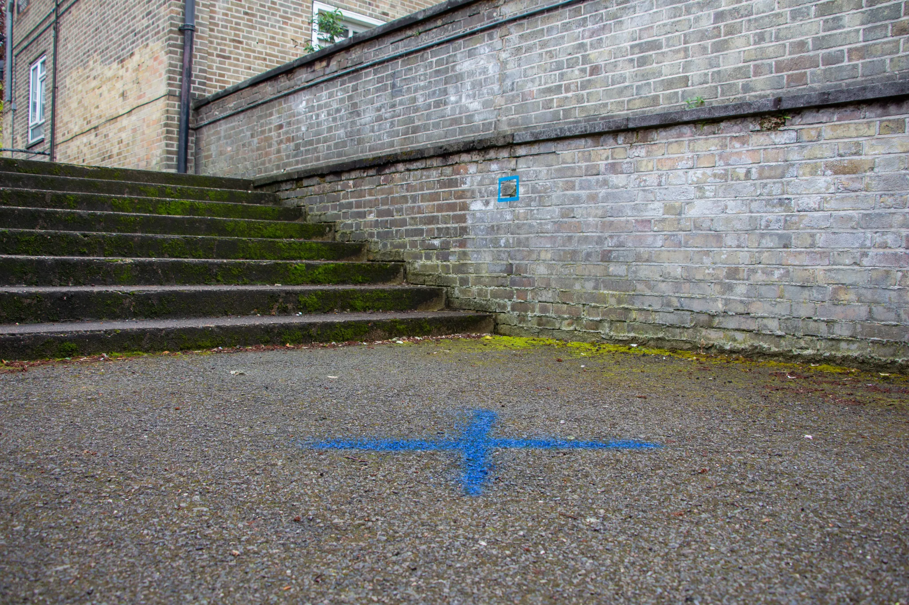
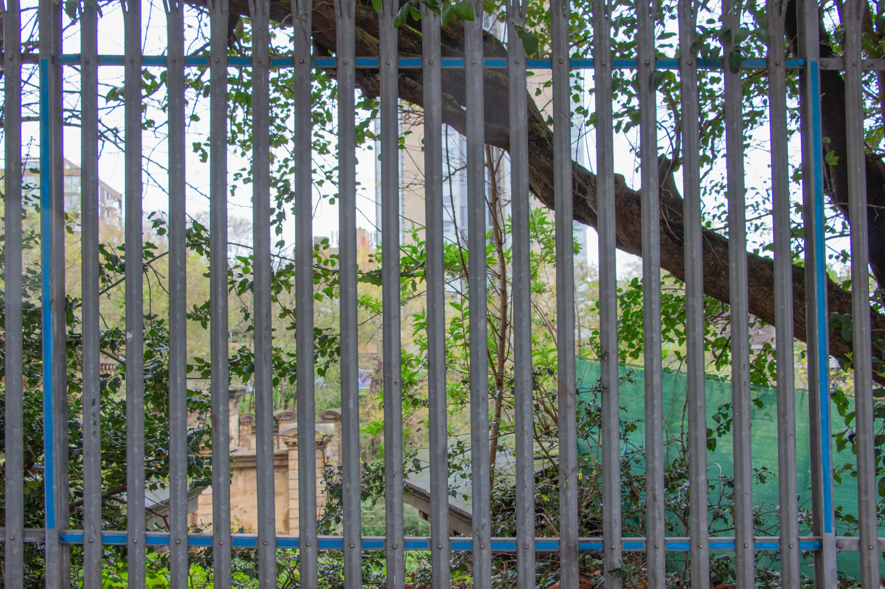
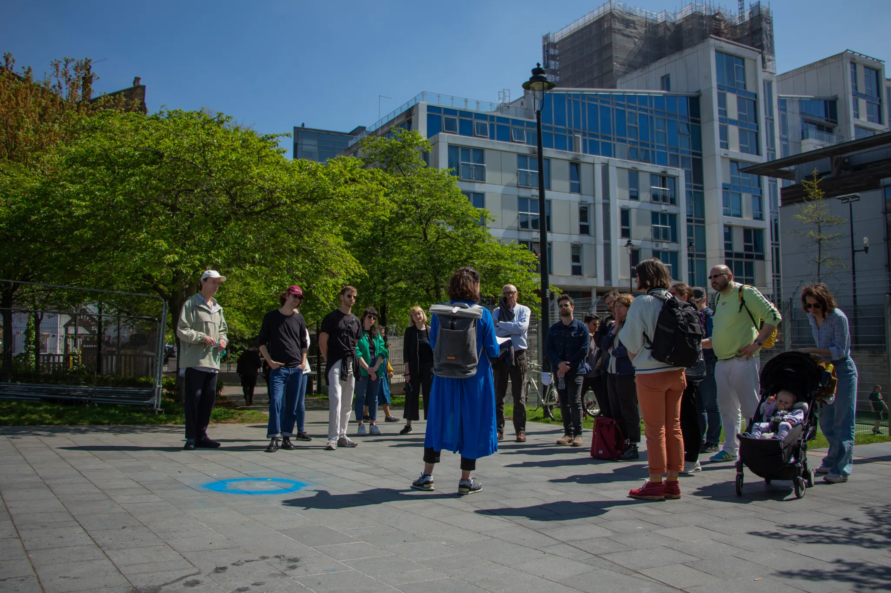
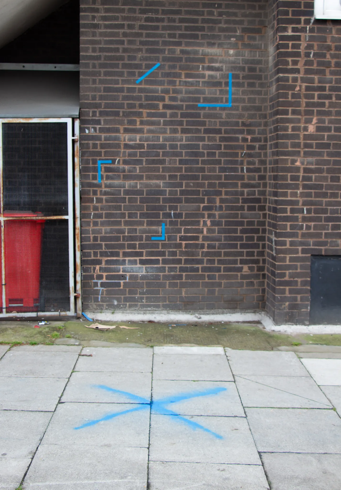

Natalia Orendain: Estate Anatomies interview
A conversation on urban rhythms
In December 2022, the Open City project commissioned Natalia Orendain to explore how the built environment shapes how we dwell in the city. The Open City project looks at the social and political life of the city to test whether the utopian ideal of the Open City exists in real life, and explores issues of race, migration, mobility and living with diversity. Using London as a case study, the project explores how the city accommodates new forms of urban life through the social configuration of its spaces and places, and looks at the ways urban government at the city-wide, borough and estate scales reflects, promotes or limits the idea of the Open City.
Natalia’s project compared three housing estates in North Camden: Chalcots, Hilgrove and Alexandra and Ainsworth, all of which are connected by a dense network of railway tracks carrying people and freight to different parts of London and far beyond. Natalia’s work explored how the estates’ distinct histories of landownership shape their architectures and material forms as well how the railway has shaped the neighbourhood as a whole. Minor and major differences make a difference. The placement of bin chutes, the sociability of shared landings, and the orientation of windows all have the ability to influence how we live together. Materialities of the present and the distant past curate possible futures, from the London clay that shapes the logic of the foundations of the tower blocks to the cladding that was too similar to that at Grenfell, that forced decanting and displacement locally. Weaving together residents’ stories, architectural histories, soil data, and building schematics, Natalia created a digital platform that peels away the layers of the buildings in which we dwell. A guided walk with a trail map provides a long term resource, allowing anyone curious to walk the site along the routes of buried rivers, railway tracks and obscured histories, using the digital platform to uncover how extraction and enslavement can shape the homes we live in.
In June of 2023 two members of the Open City team, Michael Keith and Susannah Cramer-Greenbaum, sat down with Natalia in a sunny east London garden to discuss the themes of the commission and consider how Natalia had approached her work. We began with Natalia’s initial thoughts for the project, and her artistic background, followed by her focus in this work on urban speeds and rhythms. Natalia shared some of her process in the making of the artwork; how she integrated the physical spaces in the digital platform, and how she found access to the sites through gatekeepers and other intermediaries. We ended with a discussion of the sensing in public and private spaces, and a reflection on how this work reads the city.
Initial thoughts and artistic background
Michael: Let’s start at the very beginning. Maybe you could say a little about initial impressions, what you thought when you first received the brief for the project?
Natalia: I thought it was very intriguing, and it matched with the work I had been doing so far. I identified with it quite a lot because it has these references to the work done at the Center for Research architecture (CRA), where I had studied my masters, particularly the ways of thinking or seeing space and the city, the concept of the urban and the history of it as well. It resonated with the project that I did there [at CRA], where I was also surveying rhythms, but it was more an inquiry into a marine environment and a dynamic sandbank (Orendain, Surveying Rhythms: on Measures, Dynamics and Terraformation, 2021). It was not really an urban space or at least it was not very human-related, although I always had to consider human intentions. It was more of a non-human space and particularly a marine space, an inherently dynamic thing. And that is why talking about rhythms made more sense to me than fixed images or maps.
My masters project came out of that, and what I proposed in the end was a visualisation around a 3D space of lines and diagrams that followed the interactions of rhythms in the site. That is something that I want to keep working on and experimenting with, that mindset or that kind of methodology. In one sense it is not a structured methodology at all yet, but it is a way of sensing.
Michael: On your website you describe yourself as a scenographer, visual artist and researcher. I didn't at first understand (what was meant) by a scenographer, what it was?
Natalia: Originally I studied Fine Arts in Mexico, based in sculpture. So at the forefront there were 3D spaces, a sense of objects in space. Then I went more to the performance arts. I do stage design, set design – that is what I describe as scenography. I ended up finding out that scenography was a better word to describe what I did because it's not always on a stage or it's not always a set. I feel like scenography is a more holistic approach to design that supports storytelling, and applies more to something like site-specific work or installations or just designing a scene or analysing spaces to then tell a story through its materiality. I studied that in Berlin at the Weissensee Art Academy, and then worked on it for four or five years.
Michael: So did you make a living in theatre and this experimental kind of genre?
Natalia: Yes. I worked on different kinds of research-based, or text-based documentary theatre, where there was often a strong element of music and sound, and always exploring different formats to interact with audiences. For me the creative process in all the projects that I worked on really informs what I do now. On the side, I was also developing my own art projects, my own kind of research-based art. There is a link between most of these projects. It has been about observing the performative within the everyday and analysing rhythms. I've done a lot of projects thinking about rhythms in urban spaces and logistical spaces, like ports and other marine spaces, where the sea and navigation define space. This link with my masters project, and with a research architecture kind of mindset shaped my response to this project as well.
Michael: So how did that inform your thoughts about the brief?
Natalia: In my reaction to the brief, I think I had this idea of doing some sort of diagram or visualisation of the space from the beginning. I thought that a space as you describe it in the brief, with the buildings, the architecture and the railway, altogether probably had a lot of dimensions and layers to it. I also feel that London in general has that for me, whenever I walk the streets, it's really as if a lot of time periods are present and I think about how this is made visible. It also made me think about the speeds of the city. I have always felt it when living somewhere else and then coming back. I always feel there's a specific kind of beat to the life in London
Michael: In that sense what was your initial impression of the three estates? Because you looked at them before you pitched for the commission I believe?
Natalia: Yes, I went. I also did that bit of research online, but I always feel it's absolutely necessary for my work to be there in space. I just go and have a walk. That is also something I think I got from working in theatre, the site-specific kind of theatre work. Training yourself to have a certain sensitivity to go to a space and then be very receptive to it. There are signs or marks or symbols that the space might have to communicate, because that's also what the audience would see.
I just go on a walk and try to think what would be or what are interesting locations within the space or what do I see of people walking around or if I see any residents doing everyday stuff. So I had this kind of mindset when I walked this space.
They were all very different, the three buildings. Initially I just wanted to see them and walk them, but the architecture is very different.
I remember going to Chalcots and being very interested in how they made it inaccessible for someone to walk through. I couldn't really cross from one street to another. To cross across the space is almost impossible unless you go into the building, which is also hard to do. So I was walking around noticing how they try to boundary the estate.
I think the problem (of movement across) is quite good to navigate. I didn't manage to get into the towers the first time I went. I just walked around a little bit and saw the playgrounds or the gardening and then the private housing parts. And I remember being impressed with the cars that were parked in the private housing because at that moment, I didn't know that the towers were the Council Housing and some of the other homes were private. I thought it was all part of one complex. There's some serious money there.
I remember also thinking I really wanted to find spots in the area where I could propose to put something in the space.
Michael: Intervening the space?
Natalia: Yes, I remember finding these white walls that seemed like boards for notices. But I don't know if they were at some point used for that. Then the same happened in Hilgrove, but Hilgrove is a much nicer walk somehow. You can walk around and it feels more like all the streets are sheltered. It feels really friendly, pedestrian friendly somehow. I thought the notice boards were interesting, their positions and the distribution of the space in general.
Where the playgrounds are is quite defined, clear and the green areas too.
Speeds and rhythms
Michael: So when you think about things like rhythms, things like speeds. How did they emerge in your work?
Natalia: I guess when I think of rhythms, it is based on the concept that I have of rhythms and their material events, which I developed from my masters project I mentioned before (Surveying Rhythms, 2021). Material events are specific physical manifestations in space, which function as entry points to the complexity of a network of rhythms. I found that they (the material events) make them (the rhythms) visible … and accessible somehow … because the complexity of the rhythms and the different speeds is just sometimes too hard to grasp from a human perspective, from an individual perspective. Those material events are the entry points because you can see them, and analyse them in detail. They have a certain permanence that can be revisited somehow. I suppose when I was walking around the estates, I was looking for these material events.
Michael: One of the things I think is interesting in terms of the project, in the city and also generically is that the multiplicity of speeds you highlight contrasts with a straightforward Euclidean sense of time. And I just wonder whether that was part of your thinking, different parts of the same part of the city are moving simultaneously very fast and very slow. Metaphorically, at least from the clay beneath the surface, through to the people walking through every day to even the politics of different things that are going on that are crystallised through a window, or crystallised through built form.
Natalia: Yes, and it is a kind of technique to be able to follow this. I don't feel those material events encompass everything. They are a location or a point in this network where you can then follow, follow backwards to those different temporalities. So if you can put your mind into that, it is a way you see or perceive the longue dureée, and then also see the really high beat of development, maybe the speed and the everyday rhythms that are in the environment, the everyday life activities that occupy people. Or even the effects of time over different materials, some materials last longer or register time differently.
When I started doing this methodology or this way of sensing, I realised it is a spatial analysis. I have to see the whole thing in my head. I have to see it as a big model and then slice it into different axes.
Susannah: You should have been an architect!
Natalia: I do think that sometimes.
Susannah: What you do is more fun.
Natalia: Yeah, it's more dynamic as well. That's also another thing about architecture. I always felt it was a really slow process and I don't think I can have the patience for that. You have to wait for years to see one project materialise. With scenography or stage design you have to have a similar mindset but it's more immediate that you see the things, the reality of those spaces.
Whenever I thought about the site I always felt as if you could zoom, zoom in and out into the Swiss Cottage area or one specific building. But I still needed to see the different axes of the space, keep them in mind, and know there's more than one.
A horizontal axis is more like the landscape or the city, or a kind of ground plan view. We also always have to consider the vertical axis, which includes geological time which is fascinating, because it is a clear timeline that is also spatialized. The vertical axis, in many cases of these buildings, made complete sense, especially when we were also considering the railway.
And then there is this other axis which I don't exactly know what it is, but sometimes it feels like the temporal one, that shoots into many different directions, and gives volume and movement to the other ones.
This analysis is more of an abstract kind of seeing, trying to get that sense in whatever I'm looking at. I try to think like that if I am in the space, or if I find things like open source materials on the Internet, or researching on the archives that you gave me. For the design process in my work, I realised that it's similar. For example, I kept trying to find or pinpoint, within the archive images or the old maps and diagrams of the railway, lines that could encompass those axes, actual lines.
That's what I did with the first topographic line that guides the design. It marks the railway, but it's also the landscape, and so it's revealing the lines.
Michael: Did you think of the differences between the three estates in terms of speed and rhythm?
Natalia: I felt like the access for me to sense the spaces was different, in each estate. I don't feel I could have done a complete analysis of that because in Alexandra Road estate, for example, I never felt like I could see the everyday life. It's contained in different ways. Whenever we went there was not a lot of stuff happening in the common spaces compared to maybe Hilgrove, the playground and child areas are also very different because it's just contained. Maybe I didn’t go in the right time of the day, maybe afternoons when kids are out of school, there's a bit more movement outside in the playgrounds, but they often felt like quite quiet areas for me.
Michael: The Alexandra and Ainsworth football pitch has always seemed to be more animated than others. Lot of kids are actually playing football, whereas Hilgrove seemed to be, I don't know if it's true demographically, but it seems to be kind of older, slightly more sedate, with fewer younger people on the streets.
Natalia: That is true, I just feel like the park in Alexandra Road is separate from the other areas. I also never saw that many people on the balconies. Maybe it was winter! In a way, I feel they don't allow the same kind of perception or analysis of the space.
In contrast with Chalcots, there's no way to see the flats or the private life of the flats if you come from the outside, like me, whereas in Hilgrove, maybe you get a bit more of a sense like when you walk closer to the doors. I don't know what it is, but it just made me feel like I entered somewhere, and that included the gardens and the small streets.
Michael: In our earlier work with the artist Dana Olărescu. We worked with local residents, the tenants’ association (TA) and produced a commission that used installations of flags to ask hypothetical question about alternative futures on the estate. The work was extremely well received locally but even then there is invariably a sense of uncertainty or contest about the meaning of the public spaces that were used for the installation. We had some negative reaction from one or two people on the estate where the flags signalling desired estate futures were challenged, both by occasional responses to sensitive identity questions and one resident challenging our right to use open spaces on the estate, if only temporarily, even though this had been agreed with the council and the TA. They suggested we were almost trespassing, even though we had worked with local people and tenants who coproduced the piece of art itself. She suggested ‘this isn't public space’ and that ‘you shouldn't be using it for this’. I had that animated discussion with her at the opening about the definition of what is public space. Local residents had been involved in designing the artwork, but one resident disagreed. This sense both highlighted how we thought about both the indeterminacy of meaning and the sense of rights to and ownership of public space.
Interventions by Natalia in the landscape on the guided walk
Michael: Did you leave the markings from your project on the streets and walls?
Natalia: I left the ones on the floor, for the rain to clear. I took the tape out of most places, but I left a couple on the benchmarks. And I left the framing at the beginning on the fence, I didn't think anyone would be bothered because it's not really clear property.


Michael: How did the people react to the markings? Was it noticeable? in the walk or other times like when you're putting them down, did people talk to you?
Natalia: We had all sorts of reactions. When we were doing that framing on the fence, it took longer to do and there were a few people walking by and asking, what are you doing? Some of them lived in the same street or some of them were just interested. We talked to them or explained briefly and invited them to the work. There was a mother with her teenage boy. And she said, oh, I think he would like it. We told them it's a frame to focus the view to that thing beyond there. And they were like, oh yes, we've never seen it. Was that a provocation? Yes, I think if you leave the frame then it would make people think, why is that? It draws people’s attention, and then you look. Because if you're walking past that, you don't really notice there is a really elaborated building down there, an extraordinary cultural and historical attraction.

Image of the framing of the tunnel through the fence
Another funny thing happened when we were putting down some tapes, we crossed the street to where the church is. There was supposed to be a benchmark there, we could see it on the map. So we were looking for it and it took us a long time to actually find it. We were looking at the bricks for a very long time, but we didn't see it until the third time that we walked by. It was crazy.
In other places like the one in the leisure centre, the circle one there, the caretaker was there all the time really. I thought he was not going to let us do this, but when I spoke to him and told him that it washes off and we were just doing a walk, he said it was fine. He had already been really helpful before, when I was trying to find the location of the well. I imagine people are interested to find out about new things, in a space that is so known to them.

But I guess they all thought it strange. I was staring at walls for a very long time. It was a bit of a strange thing to do. At least people seemed to think so!
Michael: It’s a nice phrase, isn't it? Staring at walls for a long time.
Natalia: I think this kind of project or analysis could be done anywhere. You can go around analysing different cities or different neighbourhoods or buildings. It would be an amazing job.
Michael: It’s funny if you think about whether this cluster of estates constitutes a neighbourhood or not. In a sense, it's almost like a connection, a question mark between these distinct places. They are obviously contiguous in a certain way and part of the walk and the digital platform reveal the contiguity of space and our relationship to it. We wanted to consider if one sees these things as discrete lumps of urban fabric. If you draw a circle around the three estates, most people wouldn't recognize it as a neighbourhood but would they see connections across a few hundred metres? In short Swiss Cottage is a tube station but is it a neighbourhood as well?
Susannah: When I say I'm working in Swiss Cottage, people are like ‘oh the tube station’. They don't think of it as an area. The roads are so arterial, they are bigger boundaries than walls. The train line really revealed the connection between them and yet nobody knows about it on the surface. Below ground level there is this massive infrastructure connection that does affect all of the estates in some similar ways, but you don’t see it if you’re just living on top of it. Unless your building is the one that’s falling into the tunnel itself like the one next to the tunnel exit!
Natalia: And it’s not really a line that people feel. If you go on the train, you just go through the underground tunnel connecting the three estates, but you also don’t feel the connection, you just don’t see where you are.
On the digital platform
Michael: Can we discuss how the digital platform links to the walk? At the beginning you were unsure if you would do both or just the platform, but I think the two together work really well…The walk forces you to materialise an object around which something happens more than the platform.
Natalia: Yes, the platform could have been more abstract if there was no need to place it in space. But from the beginning in my head, there had to be some sort of object in space that at least we could make reference to on the platform, and the residents or whoever is looking at it could pinpoint them and know exactly what we are talking about. More than just writing about a general thing like “the windows”, or like “the view”, which could be a more abstract concept. Ideally it would even be more specific, like one balcony in particular…. I think that would be even more powerful but I think that the walk really fits into the platform well, I think it’s necessary to combine both.
Susannah: It’s like another access really, a link between the physical and the digital. Which I think is really hard to do, to actually have them connected in a way that works.
Natalia: And a different way of reading the space or accessing the space as well, because the platform zooms in from a larger view, a bigger scale and then zooms into the detail and the object. It gives you the whole picture at first and then you can click on it and zoom into it. The walk is a different way of reading the space or reading the same kind of information. But as linearity it is affectively different, and it worked really well.
The portal for the tunnel, which I always felt was the beginning of the story, is actually on the edge of the area. The points to visit, somehow supported the historical narrative of the walk. Having the leisure centre in the middle was a perfect middle point for the narrative of the walk.
Michael: The platform and the walk create two narrative forms with different multiplicities.
Natalia: Even though I feel the most effective way of doing the walk is with someone guiding it and adding the narrative to it, I think it is really good that the option to still do that on your own is there, in the platform too. To either walk the whole route, or just visit specific points. But yes, I wish I could know more from visitors’ experiences, how effective the whole format is. I mean, on the digital platform, I think someone would intuitively go to the ‘ABOUT’ button on the screen. This is what we were thinking when designing it. When considering who our audience is, I think in that context it works, if it’s for the academic researchers and for the residents, they all have a context of the place and a chance to kind of understand it.
From your side did it give you different perspectives on the research?
Susannah: From our side, it really helped us focus some of the archival research. We were in the archives asking what can we find? But a lot of the questions you were asking were questions we hadn’t asked yet. Going into the archives with a more specific set of questions was great. I had so much fun going to the National Archives for all that train information. Even the way they draw the diagrams to abstract the information they need to think about the rail line and plan it with the parcels of land they need to acquire. Also looking at the registers in the Parliament archives about who exactly owned which parcel, what the rail company had to pay to get the land and permission to plough the train line through, all that stuff we never would have found otherwise. These histories of land use, how these big infrastructure projects that have social effects also have these really individual effects on different people as they’re being built, or the lawsuits about the tunnel; they all really opened up a new angle on the project.

Michael: So the place, particularly in the spatial, is really interesting, but I always find a lot of these discussions in some quarters are temporally very naive. The multiplicity of the temporal and the spatial together, this accumulation of the multisensorial I think for me is very powerful in your work for the commission. The sense of the frame. And that walk is so powerful, oddly enough, because of those little frames, because you immediately start thinking that you look through a frame to make a whole different set of dynamics. I think that’s incredibly important for the project as well as the research. Because all of these things like commonality, conviviality, materiality, lived analysis, they make sense. I think your project connects and it also disrupts other ways of reading landscape. It disrupts productively the governmental gaze, or the purely social gaze. And that also confuses and complicates the data, which is also useful and important for us. And it’s quite difficult to talk about that in any other way. So, totally instrumental.
Gatekeepers and access through intermediaries
Natalia: There is something that I was thinking about in the last days of the project, that goes through similar projects I’ve done. There’s always a character or human figure that gives access to the artists or the researcher. For example I did this project in Lagos, Nigeria and it was on the Apapa port. It was also trying to look into rhythms, shipping routes, the logistics and communications of a port, and how all these transform the landscape. I realised there that I always have to depend on another person who brings me into this space. In that case, it was a logistics manager. The foundation that was hosting me put me in touch with him and he gave me access to all these different people and all these different spaces plus his knowledge on how the logistics world works on a bigger scale. I also spoke with a pilot that takes the ships into the port from the outside. They are local pilots. So I felt that those two people were gatekeepers to these worlds.
They are key people that have many perspectives on the subject. On another project in the Goodwin Sands, I ended up talking a lot with a marine archaeologist, because he knew a lot of the history of the space, the technical aspects of the space, but also a lot about the problems that were associated with that. They wanted to dredge millions of tons of sand so he knew and he was a part of the NGO that was working against it. He had all these different perspectives on what I was looking at. So he was a kind of centre point that could link many of the concepts I was working with.
In the case of the three estates, I realised it was the caretakers who became the gatekeepers.
Susannah: Did you find them as essential as some of the other people that you’ve encountered on other projects?
Natalia: Yes, I felt like they had access to both aspects: the building and the functioning of the building; the more technical knowledge but also they were very informed about the residents and the lives of the residents, the social life of the estate. So they encompassed those two dimensions more than I thought. I felt like I could get more of an insight about the space through them. In all the other projects I have done, there’s always someone.
I guess I could also imagine the position of the architect as intermediary, except the architect was not a real human figure to talk to in this case. Although I found it really fascinating throughout the research and doing the project, wanting to understand what was the intention of the designer (of the built forms). The utopian idea of each of the buildings, which you could see more in Neave Brown’s writings, more than the other ones.[2]
Michael: There were three different utopias in a way, each estate curated a particular vision of a better future.
Natalia: Yes, and they all have different relationships to the street. I thought that it was quite interesting how each of the architects had different intentions, or more like the theory around the architecture had different intentions for the streets. I don’t know if the architects in Chalcots really meant to draw all their principles from Le Corbusier but the initial Le Corbusier vision was to put the street somewhere else.
Michael: The original architectural plan for Chalcots reflects ideas from Corbusier’s Plan Voisin. That was why we originally were going to locate our research on that estate but we were discouraged from focusing our work principally on that estate by Camden Council because of the ongoing disputes with residents about the cladding on the estate in the wake of the Grenfell Fire.
One other thing I thought was really interesting before we started this, I still wonder about it, is the heating system on Alexandra and Ainsworth. Because the single shared heating system there forces part of the estate to become a Commons. By definition, its functioning and failure becomes a common problem shared by all, whether they are tenants, leaseholders or just visiting or subletting.
Natalia: The residents of all three estates all had their ideas about heating systems. In Chalcots we were told they each have a meter. So they don’t pay one general fee, but still I suppose that the system is a common. Maybe they pay or are measured differently, but if something goes wrong, I suppose they have a common boiler. Apparently in Hilgrove each flat has their own boiler. And then there is the Alexandra Road one with the communal system shared by all[3]. There is a really big boiler room there for the whole estate and the whole concept is also based on this kind of heating system piped through the walls. There’s a lot of complaints about it, that it’s too hot and too dry.
Susannah: Yes, it’s the only place in London that’s too dry.
Natalia: And also it’s coming to the end of its lifespan. And so another interesting thing to think of is the speed of decay – what’s the lifespan of certain buildings? They’re built to last, I don’t know 50-60 years, and then what?
Michael: In terms of actually taking people around these spaces did anything surprise you about the reactions of people who came on the walk?
Natalia: I had a video chat with one of the members of the Open City NGO [educational charity unrelated to the Open City Project], Aidan, an architect.
As preparation for the walk. I had a lot of questions, because I was a bit nervous. I’ve never really done anything like that. So I was thinking how do you do it? How do you know how many people to have? How are they going hear me? All these things.
Aidan was really generous, actually, he gave a lot of advice and he was very helpful.
At the end of the walk, he was like, to be honest, It took me many times to get it right, but you seem like a natural. You would stand in the right place, so we could see you and the building, you thought of the sunlight…
Susannah: For the materiality and the sounds, you picked those spots really carefully for where you would stand. You thought about all that ahead of time which really mattered, it really changed the experience for people so we could hear you and we can always see what you were looking at.
Natalia: I didn’t realise that I also picked the right sun angle, this was not really planned!
But apparently it worked, people never had the sun in their faces. It was always me.
Susannah: You instinctively considered the lighting as a scenographer.
Natalia: But it’s true, I think this comes from my scenography work, I consider that for the audience experience. You find a place where they can get as much information as possible, but that is also sheltered, contained.
Sensing, public and private
Michael: Can we move on to how property rights and danership influence your thinking on the project?
Natalia: Regarding land ownership I found it really crazy. London has such a rich past and all these historical layers just end up adapting to each other, as the city grew. With all the areas that are no longer rural, the owner still remains, which is kind of absurd and interesting. Of course, through this you understand what were the motivations for the development of those areas, the private interests of the landowners.
And that’s one of the things that I was really impressed with when looking at the histories of these sites, that came up in all of the Council buildings, and the railway: this wish for the middle class to be a priority somehow in the decision making. Landowners mentioned at some points of the materials we read, that they wanted certain decisions to be done that way, not to lose the middle-class character, or to still have it leasable for the middle class or to not drive them away.
Michael: How important is the visual in your work, as opposed to other senses, the tactile or the aural?
Natalia: That is really a good question because I usually always try to consider the aural. It gives different information than the visual. In a project like this I based a lot on the visual. My experience of walking through it was mostly visual but also the aural as well as some people mentioned on the walk. There were moments where it was very noisy and it was busier with more information flows. Other spaces were more secluded, more concentrated. But then also tactile. I think of the kind of building materials that each space is made of. So it’s visual to start with, but it links to how the walls would feel or temperatures, also atmosphere. By atmospheres I mean air flow, freshness, or exposure, that kind of feeling that is more with the body.
Michael: It’s very hard to talk about these sensory knowledges without becoming deterministic. We always worried about the danger of retreating into an environmental determinism from our interest in the spaces of the architecture. But what was interesting was that in your project one of the ways of escaping this crude sort of determinism was the way you chose to make a mark in the landscape as well?
Natalia: Yes. Specific points in the route through the estates were organised through framing the view the walkers would see. This point was really important for me from the beginning, when I thought of this project because one of the prompts in the brief was to do something digital and while I don’t necessarily consider myself a digital artist I know that there are parts of the work or the research study that involve digital thinking. I did want to experiment or to work with diagrams, which can then become a digital artwork that can live in open source space, the cloud or Internet. But I always feel like there needs to be some sort of grounding in the space. I think it comes from doing scenography and offering that to whoever is going to listen to the story or to see the work. It offered a physical experience, an embodied experience when using it, especially because we’re talking about a physical space that can be accessed.
Maybe if we’re talking about somewhere that is not really easy to access then a purely digital experience might do, but where you can invite people, and especially if you’re talking with residents or considering them as your audience, then I thought it would be really interesting to do some spatial interventions or access to the digital through site-specific points and the material events, which were also locations in the space that would prompt a talk about longer histories or larger concepts.
Michael: What was the logic of the choice of the ‘material events’ in the work you completed? I think they worked really nicely, but talk about the ones you thought about and dismissed as well as ones you chose.
Natalia: I was also thinking about this process of choosing the material events. It was quite different for each estate. For Hilgrove, it was very clear from the research that you had done already and the articles that the Open City project had published. When I was reading these, I was scanning to find architectural elements that were recurrently mentioned or that seemed to be key to some of the analysis, like the fences for example, where you did a whole map of different kinds of fencing. You mentioned the balconies in one article too. The secret gardens and (other kinds of) secret spaces I decided not to use, because they were secret and it was just nicer for them to be kept so.
In the other spaces, like on the Chalcots Estate, it was a bit harder. But one day we went to the Wednesday coffee morning on the estate, and that was really helpful. It was inspiring to listen to the stories of the residents. That was where I thought about the windows on Chalcots because (they focused) a lot of the stories that they talked about there…It was not the cladding. It was the windows that actually featured even though the cladding was the hot political topic in some places. The windows featured for the good things and the view was obviously one of the biggest of all. We also asked them, ‘what is your favourite part of living here?’ and most of them said ‘the view’. The windows had a dual prominence, problematic because of their condition and exposure, but also a source of value and pleasure for the view.
Thinking about the foundations of the buildings and the structural themes was more my input, because it didn’t come out from the conversations locally, at least initially. Since when I started thinking about this project, I thought there must be something there because of how the towers stand. I was sure the structure was an important element. Especially when taking into account the rail tunnel and the interactions of their height with the depth of the piling of the building foundations.
Michael: I thought that was really interesting, how deep they are in proportion to the height of the building?
Natalia: They can be 50% of the building height or something more even. Sometimes it’s the same (as the height of the tower) Sometimes it’s like mirroring, although not always. It’s not a rule. That they have to be like that depends on the soil, the deeper they go is because of the nature of the soil. Because otherwise the foundations don’t bear the weight of the building.
Michael: In contrast the buildings around parts of historic east London have no foundations whatsoever, in the case of some Victorian terraces the houses keep each other up and there is no foundation at all for those that are 18th century and before.
Here Open City paused our questions as Natalia had a question for us
Natalia: In what way is the commission to be used?
Michael: When we designed the project, we said we would use arts-based methods and that there would be artefacts of some kind. We were not interested in the intellectual property of the piece, other than having access to it. We all said in the brief right at the beginning that the intellectual property of the artist’s artefact, whatever it is, whether it’s a film, a piece of work or a piece of cloth, whatever, the intellectual property sits with the artist.
Natalia: I feel like I rarely have that need for intellectual property. The analysis we did or the storytelling part of it, the walk, the piecing of information together and tying in the archival work together, all are a different way of telling stories. I feel like those stories do not belong to me. It’s not my artwork. It is more a process that is very shareable, or should be. It is a shared collective process. It is a provocation to think or to see certain things in that way. It’s the thing that I put out there and then hopefully someone wants to do that on their own. It does come from a line of work that I’ve been developing from before, so I guess that’s also part of me as an artist.
Michael: Is that informed by particular writers you have been reading as well as your own practice?
Natalia: Yes, yes, definitely. Particularly from my process on coming to a form of rhythm analysis, it stems from Henri Lefevbre.[4] But I don’t necessarily focus too much on it. I liked the figure of the rhythm analyst, that chapter of Lefebvre’s book, more than the other stuff that he wrote. I really like the fact that he mentions – I can’t remember now the exact words, – but I think he says the rhythm analyst is listening to the space. He mentions this, the acoustic layer of it, which I thought was quite provocative.
I also use the concepts of rhythm and milieux from Deleuze and Guattari in A thousand Plateaus. I find it difficult to take on because I don’t necessarily understand all of their book. But one chapter really resonated with how I was thinking.[5] What I liked about this chapter is that for me it talked about the material part, the shapes and the contours of things. And I have tried having this conversation with a philosopher friend, to see if it does make sense, or did I interpret something that is not necessarily there. But I feel like they talk a lot about the rhythms and how they are the contours or how they shape the reality. They also talk about the idea that the rhythms are the communication between milieux. It is the contact between milieux that is the rhythm. I don’t know if it says that in the book, but I understood it like that, like the rhythm then makes the shape of whatever we’re looking at. Like the skin and the atmosphere, there is communication between milieux.
Michael: I was thinking about the skin of the building in this context.
Natalia: Yes and how they communicate with the atmosphere, the wind, the temperature and the times, the different temporalities of that…
Michael: I was coming to see one of the towers on Chalcots after the refurbishment for the first time and there was this guy trying to explain to one of the residents of Chalcots, what they were trying to do. It was precisely about the different skins (of the building). Dampness, fluids and humidity and fungus; basically when you try and strip the buildings of something, then try and put something on top of it that stops rain getting access, you get a lot of fungus growing because it’s too humid. Literally the skin of the building can’t breathe.
You find this with street terrace housing of a certain age. They repointed this Victorian building we are in today a couple years ago. It had been repointed previously a while ago with a different kind of cement which filled in between the membranes, which meant that the house doesn’t breathe right. Whereas if you then use the old stuff, then the building breathes well.
That sense of the skin and the media and the media being structured by a boundary and the boundary is permeable, impermeable or semi permeable is generative of different ways of thinking and imagining the materiality of the building.
Natalia: Yes and it’s crazy because for all these people that are more technical in their way of working and thinking, I feel like the architect functions as a medium, between the lived experience and the technical constitution. I feel like the architectural positioning should do that communication between really technical things, and all the other subtle things which maybe they (the technicians) cannot see, like how symbolic that is and actually even philosophical. Like what it means for a resident to be living in that space, the everyday life, the interactions that dampness has or the temporalities of it. There are a lot of layers that he was probably not even thinking about.
I was also thinking that for me architecture is a process. Sometimes when you’re walking down the street you see a building and it’s finished and appears as a stable thing. Maybe you don’t think about all the processes that went through thinking about the design, or the fact that buildings themselves are going through a process. But the process does include geological aspects. It does include considerations of aspects that are very broad or expanded. It requires that kind of thinking, of being very detailed but also going very far.
References
Brown, Neave, ‘Alexandra Road as an as yet Unbuilt Project’ Architectural Design, vol. 139, no. 11, 1969.
Brown, Neave, ‘Reflecting on Alexandra Road as Built’ Architectural Review Vo 8, 1979.
Deleuze, Gilles, Félix Guattari, and Brian Massumi. A Thousand Plateaus: Capitalism and Schizophrenia. Bloomsbury Academic, London, 2013.
Elliott, Harvey, ‘Down Lego Lane’, The Daily Mail, Dec. 1, 1977.
Fondation Le Corbusier: https://www.fondationlecorbusier.fr/en/work-architecture/projects-plan-voisin-france-1925/, accessed June 12, 2024.
Lefebvre, Henri. Rhythmanalysis: Space, Time and Everyday Life. Continuum, London;New York;, 2004.
Orendain, ‘Surveying Rhythms: on Measures, Dynamics and Terraformation,’ 2011.
[1] Olărescu, ‘What If?’ 2023. Please see the Open City project website for further details of the work with Dana Olărescu
[2] See Brown 1969 and 1979; and Elliott 1977
[3] See the more recent disagreements about the landmark communal heating system on the estate at https://www.architectsjournal.co.uk/news/angry-alexandra-road-residents-say-council-heating-upgrade-will-destroy-listed-neave-brown-estate
[4] Lefebvre, Rhythmanalysis: Space, Time and Everyday Life. Chapter 2: “The Rhythmanalyst: A Previsionary Portrait” pg. 19.
[5] Deleuze and Guattari, A thousand Plateaus. Chapter 11: 1837: Of the Refrain, pg. 310
photographs by Daria Moria